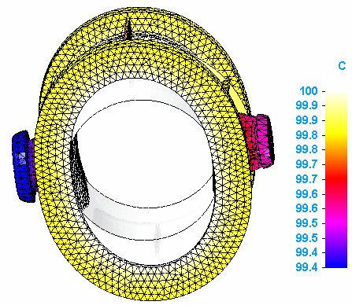

Applied temperature plots
Applied temperature plots are produced by thermal coupled studies as one of the results of thermal stress analysis.
You can display applied temperature plots when you:
-
Select Applied Temperature from the Result Type list in the Data Selection group on the ribbon.
-
Select Plots→Static→Applied Temperature in the Simulation pane.
Applied temperature plots
Applied temperature plots show the gradient temperature distribution on the deformed and undeformed model, as well as on the primary model.

You can use the Applied Temperature check box in the Results Options section of the Create Study dialog box to control whether applied temperature plots are generated automatically when the study is solved.
Temperature plots are generated by thermal studies and by thermal coupled studies. Applied temperature plots are generated only by thermal coupled studies.
How do I
Plot resultsLearn more
Plotting resultsResult plots for mixed mesh models
Displacement component plots
Stress component plots
Constraint component plots
Strain component plots
Beam properties
Beam reaction component plots
Beam stress component plots
Beam diagrams
Temperature plots
Heat flux component plots